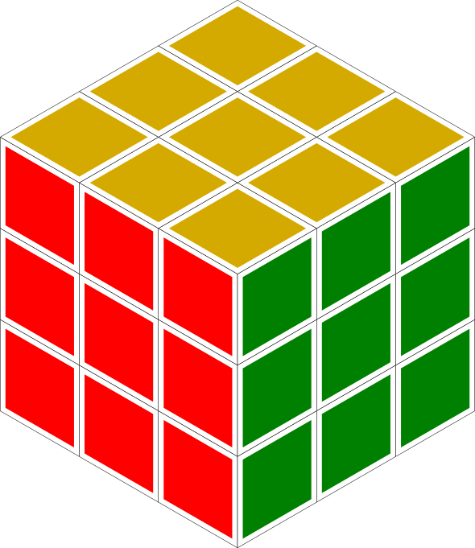
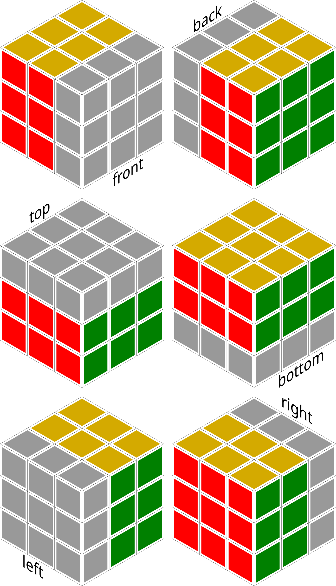
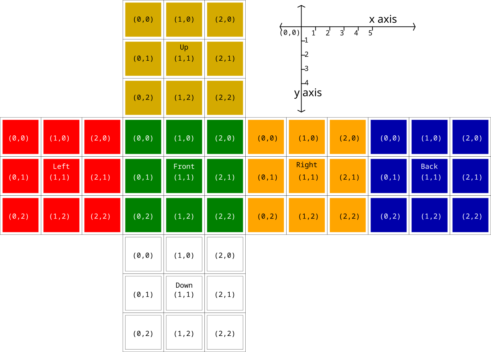
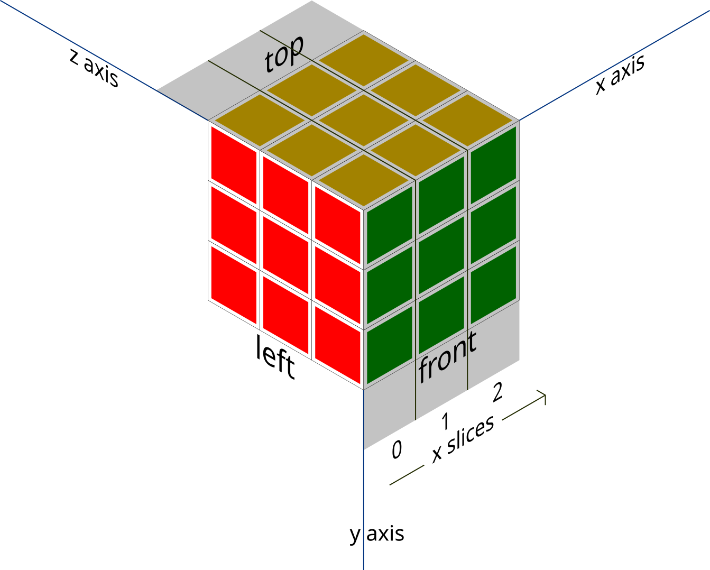
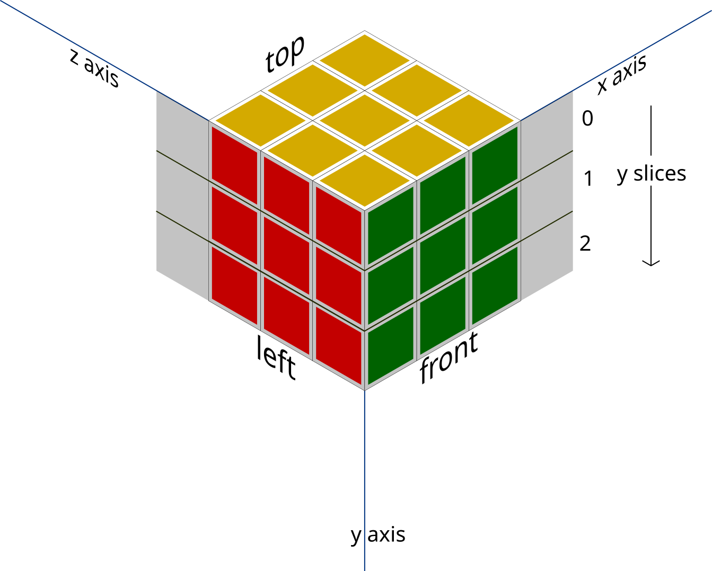
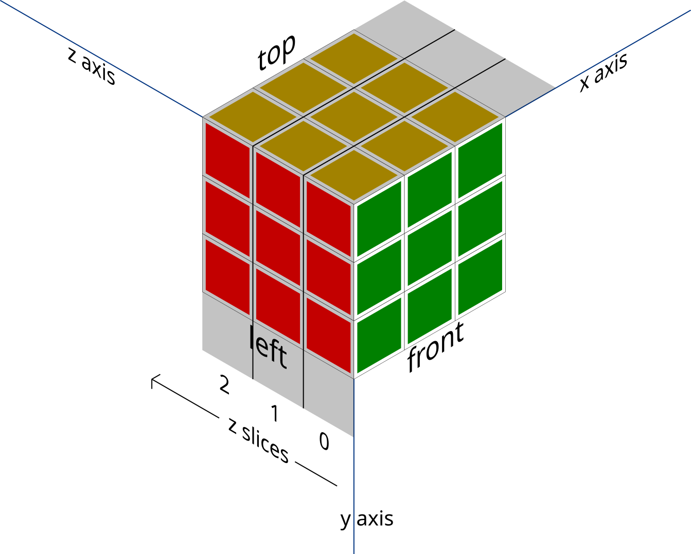
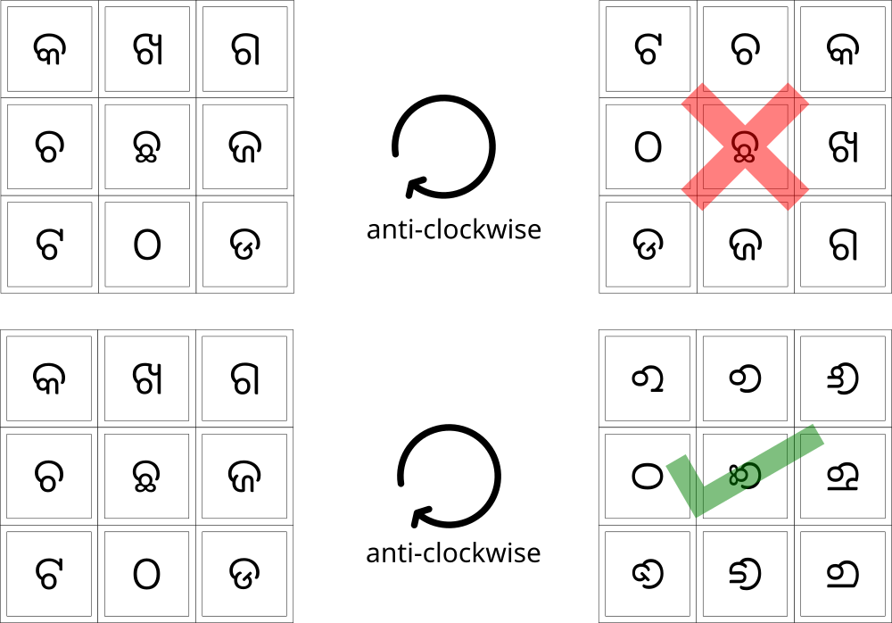
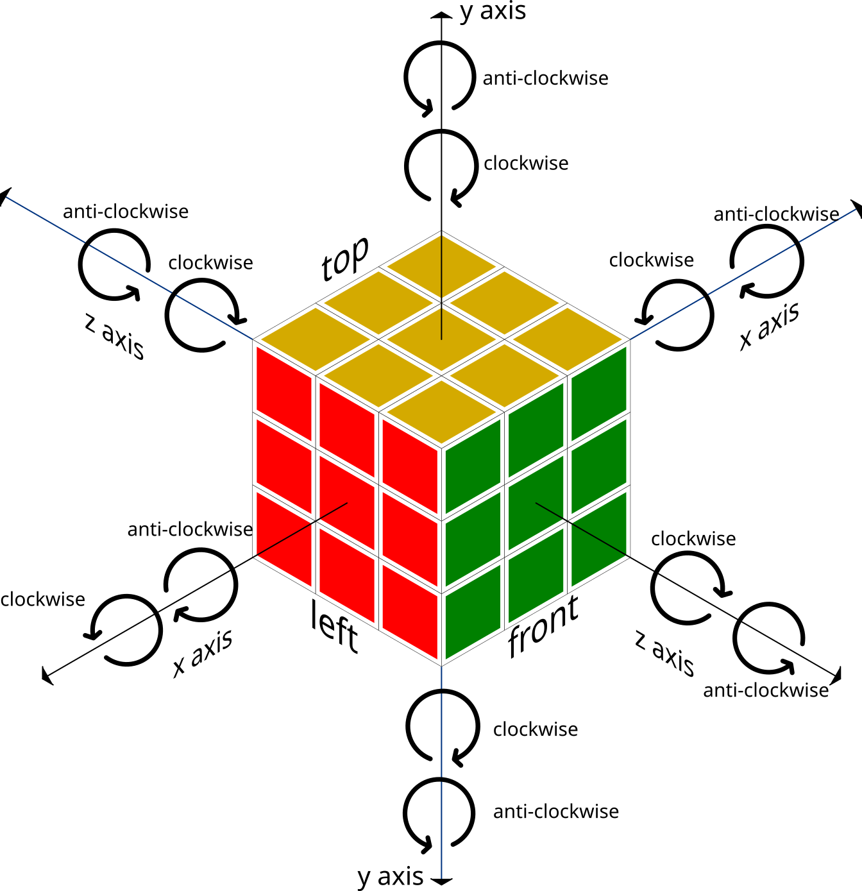

Cube

It is a generalized implementation of Rubik's cube of any size. Either you want to play with Rubik's cube or analyze how a particular Rubik's cube algorithm works or want to create some other application with Rubik's cube, you will find the project helpful to you.
First time I saw a Rubik's cube somewhere around 12 or so years back. It was belongs to one of my friends. I was fascinated by seeing how all the pieces can move with respect to each other. As time passed I had learnt some algorithm to solve the cube. The day I solved my first cube, I have created the curiosity in me to know how the algorithm works. I tried finding a good simulator for doing this. Then I thought why not create another simulator.
Design
I tried to keep the cube logic and the UI rendering logic as separate as possible. So that it can be used with any js runtime to render on any ui framework if needed. There is an implementation to run the cube in console. and another implementation to run the cube in browser.
Assumptions
Faces of the cube

Tiles coordinates of the cube
Each face is made of a square grid of tiles. Coordinate of each tile is shown as below. The 3d cube is unwrapped in a 2d plane then the coordinate system is applied to it.

Slices of the cube
Each rotation operation will affect one and only one slice of the cube.
x-slice

y-slice

z-slice

Rotation of slice
While rotation is applied to a face or a slice of the face, rotation is also applied to each tile. If rotation is not applied to each tile, it is fine for face with solid color. But for face with images, after rotation is applied the image will look mis-aligned. Below is the demonstration of this.

Definition of rotation of the face around axises
